Espaços pensados para aprender e conviver
A escola funciona em prédio próprio na Vila Carmosina (Itaquera), com quadra poliesportiva coberta, refeitório, pátio coberto, parquinho e salas equipadas — confira cada ambiente abaixo ou veja a página completa da estrutura.


Entrada e Recepção
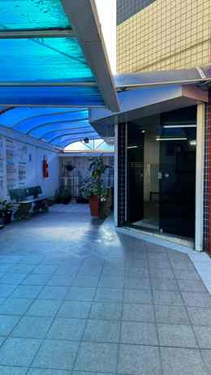
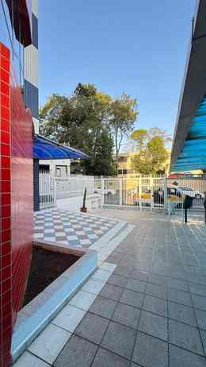
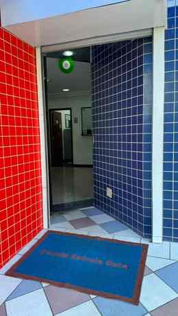
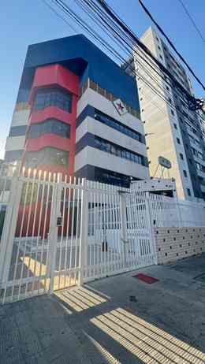
Salas de Aula
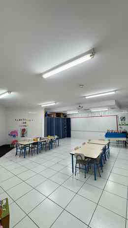
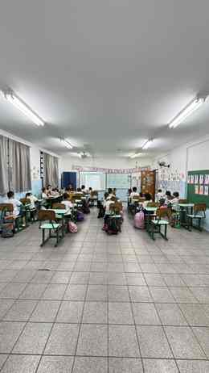
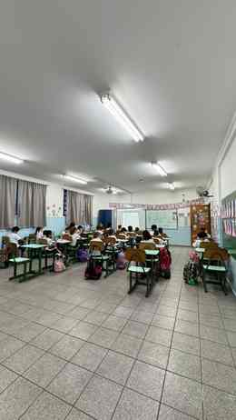
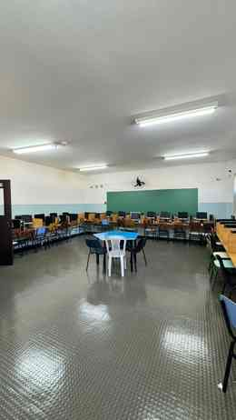
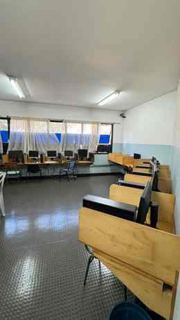
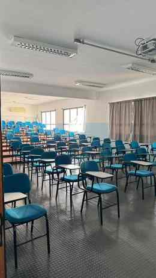
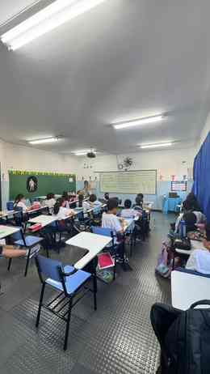
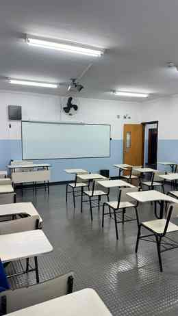
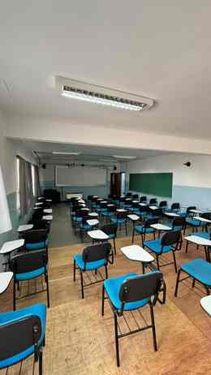
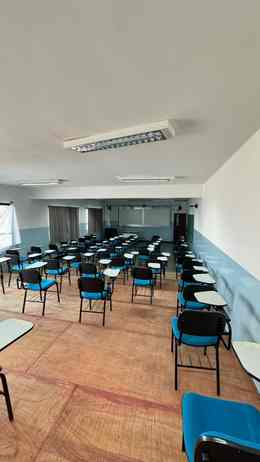
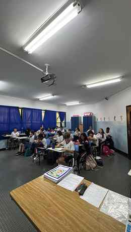
Quadra Poliesportiva
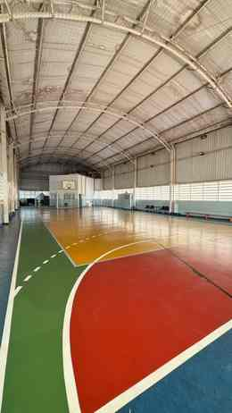
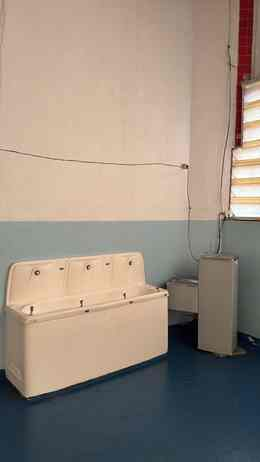
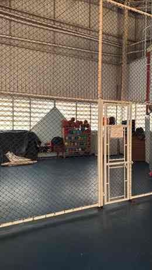
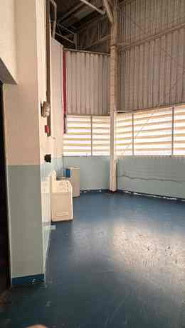
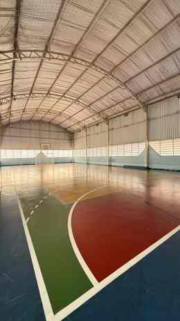
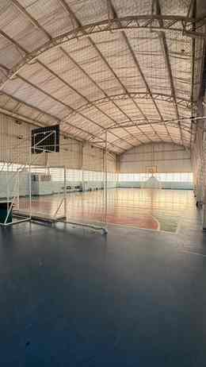
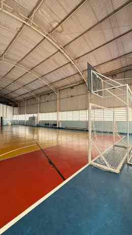
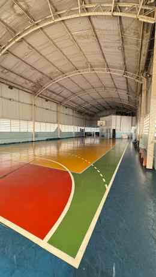
Pátio e Áreas de Convivência
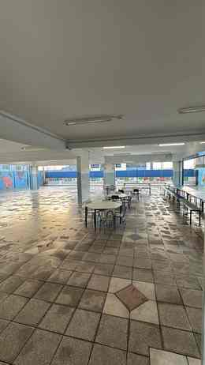
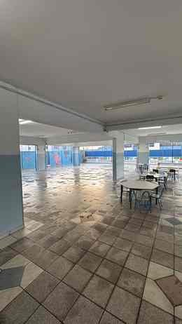
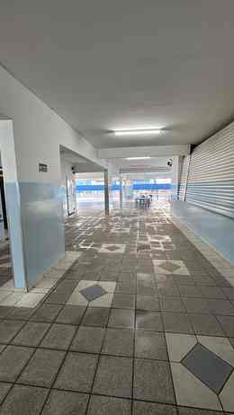
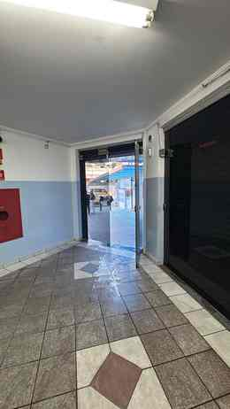
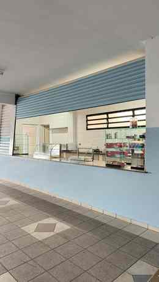
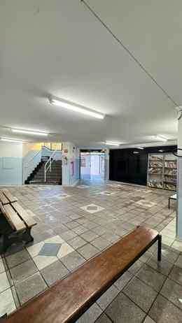
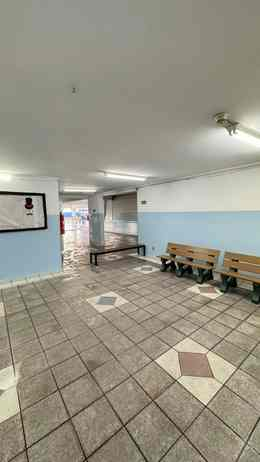
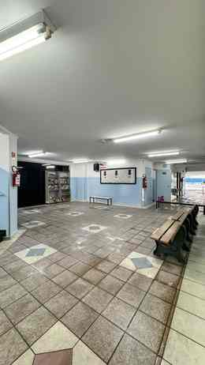
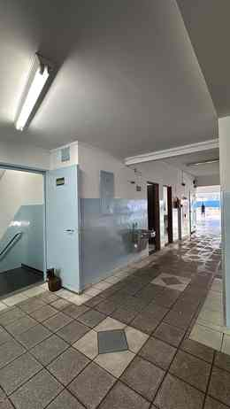
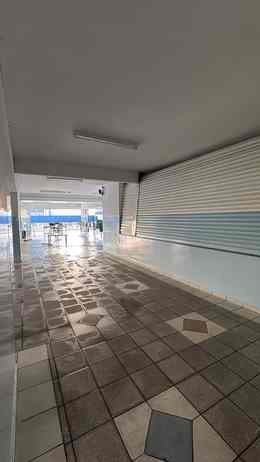
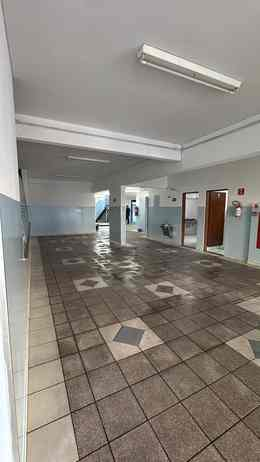
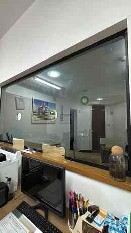
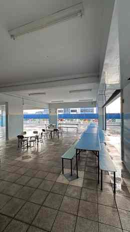
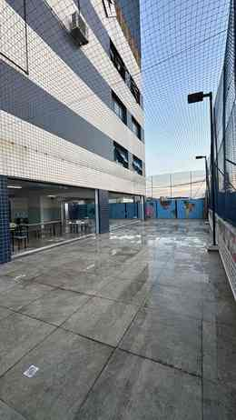
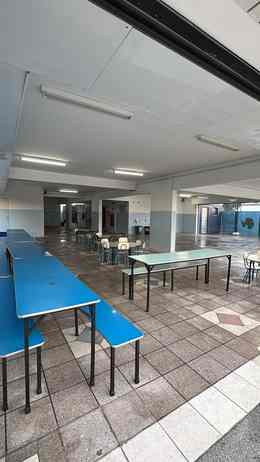
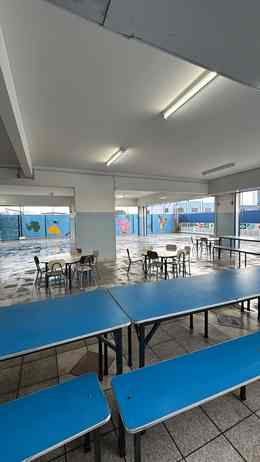
Parquinho e Brinquedoteca
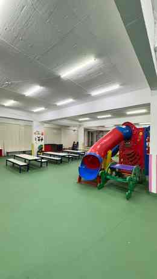
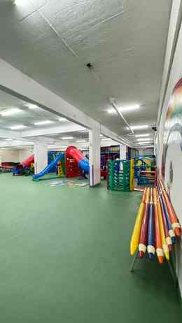
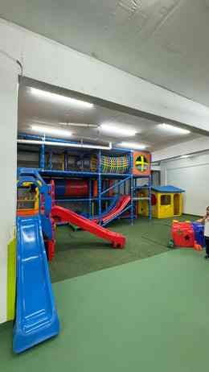
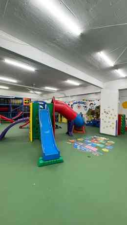
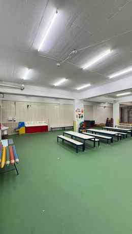
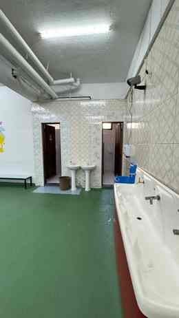
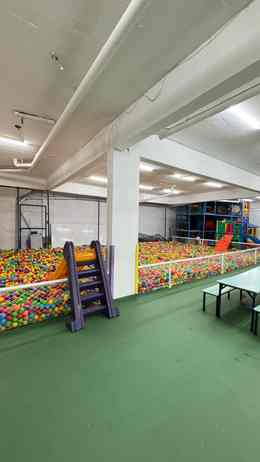
Corredores e Circulação
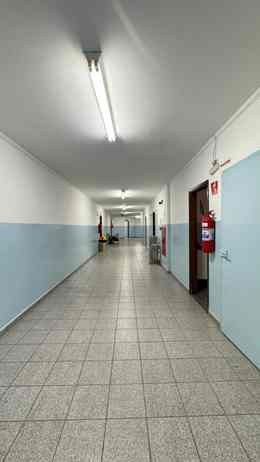
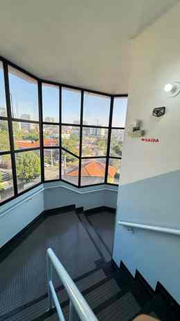
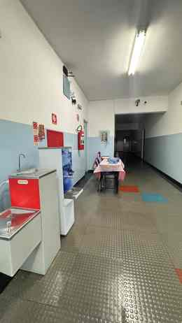
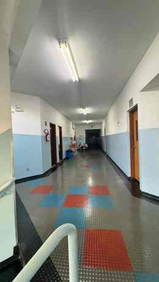